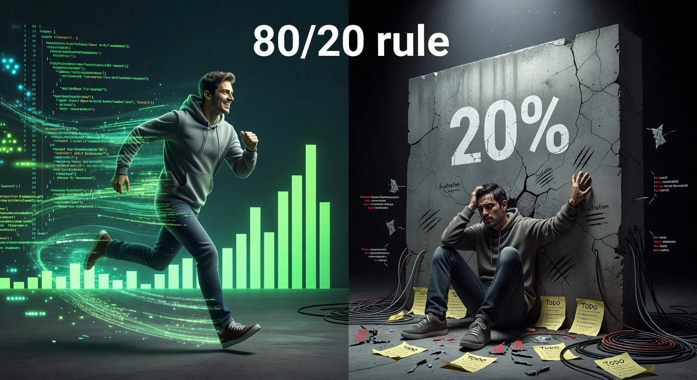

Why This Exists

AI coding agents get you to 80% fast — then start breaking things trying to close the last 20%. You've spent $1,500 in tokens to watch an agent destroy its own work. Sound familiar?
You fire up an AI agent — Copilot, Cursor, Claude, whatever — and describe the app you want. The first 80% is magic. Files appear, components wire up, the database schema materializes. You're shipping faster than you ever thought possible.
"Build me a task management app with React, Node.js, and PostgreSQL." Within hours you have scaffolding, routes, components, database migrations. It feels like the future.
The codebase grows. Auth flows interact with database queries. Middleware chains get long. The agent still works, but you notice it's making assumptions without asking. It picked a caching strategy you wouldn't have chosen.
Every change breaks something else. Fix the auth bug, break the dashboard. Fix the dashboard, break the API response format. The agent starts refactoring code it wrote three sessions ago — code that was working fine — because it forgot why it was written that way.
You've burned through tokens, lost track of what the agent changed, and the tests (if there are any) are all red. The agent is confidently producing code that compiles but doesn't work. You're debugging AI-generated code you don't fully understand, in an architecture you didn't fully choose.
When agents work from loose intent rather than hardened specs, they do fine on greenfield builds but start thrashing once the codebase gets complex enough that every change has downstream consequences. That's when they break things faster than they fix them.
The Fix
Each principle builds on the last. Together they form Plan Forge's 7-step pipeline — specify, pre-flight, harden, execute, sweep, review, ship.
Stop prompting agents with intent and hoping for the best. Build structured plans before ever letting an agent write code. Define what you want and why — not the how.
This alone is a gamechanger. Instead of "build me an app," you give the agent a clear specification to execute against. Ambiguities get surfaced before coding starts, not discovered after 500 lines of wrong code.
Take the spec further — run it through a hardening pipeline that converts it into an execution contract. Add enterprise guardrails that coding agents have to obey: architecture principles, security rules, testing standards, error handling patterns.
Think of it as giving agents rules of engagement, not just instructions. The scope is locked. The forbidden actions are listed. The validation gates are defined. Drift becomes structurally impossible.
One of the biggest reasons agents break things at 80% is they lose context. They forget the architectural decisions from three sessions ago. They forget why a piece of code was structured a certain way. So they rewrite it — and break everything downstream.
A semantic memory layer captures every decision, every pattern, every lesson learned — tagged by project, phase, and source. The next session searches memory before writing a single line. The agent already knows what you chose and why.
Wire it all together. The agents operate within the spec, within the guardrails, and with memory of the full project context. Describe a feature from your phone via WhatsApp. The system hardens the plan, executes it slice-by-slice with validation gates, notifies you on progress, runs an independent review, and ships — all while capturing every decision for next time.
The result: the 80/20 wall disappears. The agents stay coherent through the full build because they're executing hardened specs rather than improvising. Token usage drops by half or more — because the agent isn't wasting context on exploration and backtracking.
Where vibe coding stalls
Shipped with hardened plans
Token reduction
Rework after review
The four principles form the complete unified approach — but each one works independently. Use one. Use two. Combine them however you want. They're tools, not a monolith.
Plan Forge is free, open source, and ready in minutes. Your next feature build won't end in "maybe I should start over."
Read the full story: The 80/20 Wall blog post →